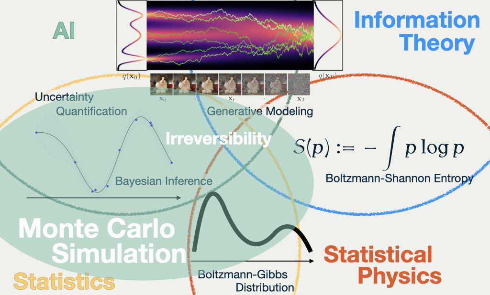

1 Keywords in My Research
This slide contains some of my research keywords. The four words in black letters, Monte Carlo Simulation, Bayesian Inference, Generative Modeling, Uncertainty Quantification, are the keywords of my research.
The four fields in colors are the fields that my research is related to.
2 Distribution: Key of New Science

One thing that all the keywords and fields have in common is that they use the notion of probability distribution as a key concept.
In the slide, I show four examples where the notion of distribution is used as a key building block,
- Diffusion Model, where a transformation between known and a unknown distribution is seeked,
- Boltzmann-Shannon entropy, which is one of the most important concepts to understand different distributions, identified in the field of statistical mechanics, but found a new application in the field of information theory,
- Boltmann-Gibbs distribution, which is a distribution that is used to describe the equilibrium state of a system, but found a new interpretation in the field of Bayesian inference and machine learning,
- Uncertainty Quantification, which is a characteristic of Bayesian approach in statistics, but recently rediscovered as a key quality of successful methods in the field of machine learning.
3 A Computational Reinterpretation
Most of the traditional approaches, including conjugate Bayesian models and density estimation, concentrate on aquiring the function value p(x) of the probability density function.
However, after the rise of the computer, ‘learn to generate from p’ approach has been found to be more powerful and practical, especially through the development of a class of Monte Carlo methods called Markov Chain Monte Carlo (MCMC).
The mere fact that these two approach (learn the function p, and learn to generate) are indeed different is already surprising, which is only realized recently by the invention of Generative Modeling.
4 Development in Monte Carlo Methods


Starting from this slide, I will talk about my research more specifically, which is about MCMC methods mentioned above.
In this slide, there are three stochastic processes with distinct characteristics. They are found and utilized in the MCMC methods, from the left to the right, that is, Markov Chain (discrete time) to Diffusion Process (continuous time), and the last one is a Jump Process (still in continuous time).
4.1 What’s Wrong with Diffusion?
Nature is not necessarily efficient.
E.g. Would you wait until the sugar dissolves? To have a cup of coffee?
It’s difficult to simulate.
The Langevin diffusion constitutes one of the most effective methods in MCMC’s history, but it is not free of shortcomings.
There are sereval reasons technically, but from the high level, the choice of the process itself is not optimal.
An intuition behind this poor performance is captured by the notion of reversibility. The reversibility of the process typically implies slow exploration of the space, as the process tends to go back to where it came from.
4.2 What’s New in PDMP?

All with a new strategy of simulation, which seems to be very efficient (ongoing research)
Therefore, a new class of processes, called Piecewise Deterministic Markov Process (PDMP), has been proposed as an alternative to the Langevin diffusion.
As can be easily seen, PDMPs are characterized by the dominating deterministic move, which goes straight through the space until the point where it changes the direction randomly.
5 PDMP Package
Piecewise Deterministic Markov Process
Python 
pip install pdmp-jaxJulia 
] add PDMPFluxMy research mainly concerns the theoretical aspects of PDMPs. The most obvious question is whether PDMPs are really efficient seen as a Monte Carlo algorithm.
I aim to conduct convergence analysis and complexity analysis of PDMPs to answer this question, and further provide insights into PDMP and related statistical computational algorithms.
Alongside theoretical inquiries, I have developed a package to simulate PDMPs for sampling applications, because there was not a fixed implementation that works for general targets and general PDMPs.
This package will accelerate my research and comparison between different implementations, which may be one of the most interests practically.
6 Bringing Science Back

This line of research regarding PDMPs might occupy the green area indicated in the slide, bridging Statistical Physics with (Bayesian) Statistics, and a part of AI and Machine Learning.
However, the notion of reversibility has recently found to be importance in generative modeling as well.
Thus, the Stochastic Process approach I take and the notion of probability distribution are expected to have more and more important roles in the four fields I mentioned above. Indeed, Stoachstic Process is already used as a foundation of stochastic thermodynamics, which is a new field of physics.
The recent development in AI and Machine Learning is sometimes said to be ‘launched bottom up’, which means that the success of the methods are not necessarily based on the theoretical insights, but rather on the engineering efforts.
My aim is to bring science back to the field of machine learning and statistics, and to provide a solid foundation for the future collaborative development, just as how we acquired the technology we use today.